After completing this lesson, students will be able to:
know that plants too have certain autonomic movements.
understand different types of movement in plants.
differentiate tropic movement from nastic movement.
gain knowledge on transpiration.
understand that plants produce their food through the process of photosynthesis.
understand the process of transpiration.
Animals move in search of food, shelter and for reproduction. Do plants show such movement question mark Have you observed the leaves of Mimosa pudica Bracket OPEN touch-me-not plant bracket closed closes on touching, whereas Helianthus annuus Bracket OPEN sunflower bracket closed follows the path of the sun from dawn to dusk, Bracket OPEN from east to west bracket closed. These movements are triggered by an external stimuli. Unlike animals, plants do not move on their own from one place to another, but can move their body parts for getting sunlight, water and nutrients. They are sensitive to external factors like light, gravity, temperature etc. In this lesson, we will study about various movements in plants, photosynthesis and transpiration.
Tropism is a unidirectional movement of a whole or part of a plant towards the direction of stimuli.
Based on the nature of stimuli, tropism can be classified as follows.
Phototropism: Movement of a plant part towards light. Example shoot of a plant.
Geotropism: Movement of a plant in response to gravity. Example root of a plant.
Hydrotropism: Movement of a plant or part of a plant towards water. Example root of a plant.
Thigmotropism: Movement of a plant part due to touch. Example climbing vines.
Chemotropism: Movement of a part of plant in response to chemicals. Example growth of a pollen tube in response to sugar present on the stigma.
Tropism is generally termed positive if growth is towards the signal and negative if it is away from the signal. Shoot of a plant moves towards the light, the roots move away. Thus the shoots are positively phototropic.
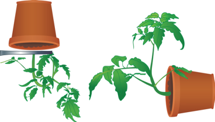
Figure 19.1 Positive phototropism Bracket OPEN Negatively geotropic bracket closed
Usually shoot system of a plant is positively phototropic and negatively geotropic and root system is negatively phototropic and positively geotropic.
Figure 19.2 Negative phototropism image.was given below
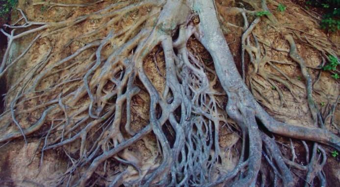
Bracket OPEN Positively geotropic bracket closed
Some halophytes produce negatively geotropic roots Bracket OPEN Example Rhizophora bracket closed. These roots turn 180 degree upright for respiration.
Image was given below
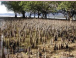
Nastic movements are non-directional response of a plant or part of a plant to stimulus. Based on the nature of stimuli, nastic movements are classified as Photonasty and Thigmonasty .
Photonasty: Movement of a part of a plant in response to light. Example Taraxacum officinale, blooms in morning and closes in the evening. Similarly, Ipomea alba Bracket OPEN Moon flower bracket closed, opens in the night and closes during the day.
Figure 19.3 Photonasty in Moon flower Image was given below.
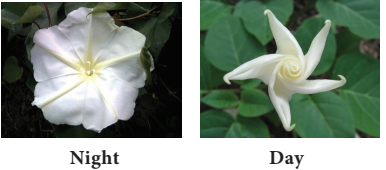
Thigmonasty: Movement of a part of plant in response to touch. Example Mimosa pudica, folds leaves and droops when touched. It is also known as Seismonasty.
Figure 19.4 Thigmonasty in Mimosa pudica image was given below
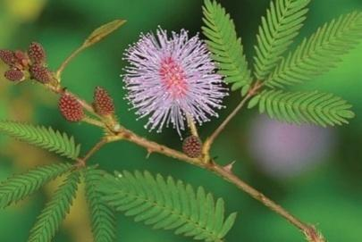
Box item OPEN
Take a glass trough and fill it with sand. Keep a flower pot containing water, plugged at the bottom at the centre of the glass trough. Place some soaked pea or bean seeds around the pot in the sand. What do you observe after 6 or 7 days question mark Record your observation. box item ends
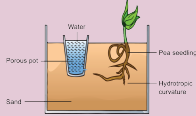
BOX ITEM OPEN
Take pea seeds soaked in water overnight. Wait for the pea seeds to germinate. Once the seedling has grown put it in a box with an opening for light on one side. After few hours, you can clearly see how the stem has bent and grown towards the light. Box item ends
Box item OPEN
The Venus Flytrap Bracket OPEN Dionaea muscipula bracket closed presents a spectacular example of thigmonasty. It exhibits one of the fastest known nastic movement.
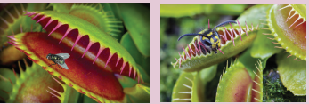
Box item ends
Table 19.1 Differences between Tropic and Nastic movements table was given below
Tropic movements |
Nastic movements |
Unidirectional response to the stimulus. |
Non-directional response to the stimulus. |
Growth dependent movements. |
Growth independent movements. |
More or less permanent and irreversible. |
Temporary and reversible. |
Found in all plants. |
Found only in a few specialized plants. |
Slow action. |
Immediate action. |
Thermonasty: Movement of part of a plant is associated with change in temperature. Example Tulip flowers bloom as the temperature increases.
Figure 19.5 Thermonasty in Tulip image was given below
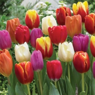
‘Photo’ means ‘light’ and ‘synthesis’ means ‘to build’. Thus photosynthesis literally means ‘building up with the help of light’. During this process, the light energy is converted into chemical energy. Green plants are autotrophic in their mode of nutrition because they prepare their food materials through a process called photosynthesis. The overall equation of photosynthesis can be given as below:
6 C O2 plus 12 H 2O Bracket OPEN Carbon dioxide and Water bracket closed in the presence of Sunlight and Chlorophyll gives C6H12O6 plus 6H2O plus 6O2 Bracket OPEN Glucose and Water and Oxygen gas bracket closed
BOX ITEM OPEN
Do the insects also trap solar energy question mark Tel Aviv University Scientists have found out that Vespa orientalis Bracket OPEN Oriental Hornets bracket closed have similar capabilities to trap solar energy. They have a yellow patch on its abdomen and an unusual cuticle structure which is a stack of 30 layers thick. The cuticle does not contain chlorophyll but it contains the yellow light sensitive pigment called xanthopterin. This works as a light harvesting molecule transforming light energy into electrical energy. Box item ends
The end product of photosynthesis is glucose which will be converted into starch and stored in the plant body. Plants take in carbon dioxide for photosynthesis; but for its living, plants also need oxygen to carry on cellular respiration.
Box item open
Pluck a variegated leaf from Coleus plant kept in sunlight. Destarch it by keeping in dark room for 24 hours. Draw the picture of this leaf and mark the patches of cholorphyll on the leaf. Immerse the leaf in boiling water followed by alcohol and test it for starch using iodine solution.Record your observation.
Image was given below
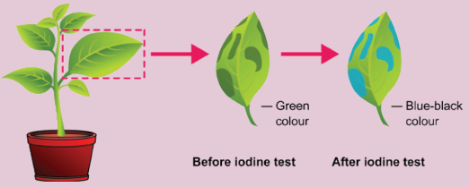
Box item ends
Box item open
Place a potted plant in a dark room for about 2 days to destarch its leaves. Cover one of its leaves with the thin strip of black paper as shown in the picture. make sure that the leaf is covered on both sides. Keep the potted plant in bright sunlight for 4 to 6 hours. Pluck the selected covered leaf and remove the black paper. Immerse the leaf in boiling water for a few minutes and then in alcohol to remove chlorophyll. Test the leaf now with iodine solution for the presence of starch. The covered part of the leaf does not turn blue-black whereas the uncovered part of the leaf turns blue-black colour. Why are the changes in colour noted in the covered and uncovered part of the leaf question mark
Image was given below
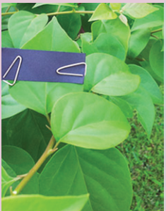
Box item ends
These activities show that certain things are necessary for photosynthesis. They are:
1. Chlorophyll Green pigment in leaves
2. Water
3. Carbon dioxide Bracket OPEN from air bracket closed
4. Sun light
The loss of water in the form of water vapour from the leaf of the plant body is called as transpiration. The leaves have tiny, microscopic pores called stomata. Water evaporates through these stomata. Each stomata is surrounded by guard cells. These guard cells help in regulating the rate of transpiration by opening and closing of stomata.
Figure 19.6 Structure of Stomata Image was given below
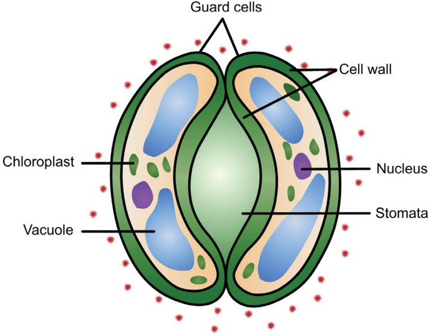
There are three types of transpiration:
Stomatal transpiration: Loss of water from plants through stomata. It accounts for 90 to 95 percent of the water transpired from leaves.
Cuticular transpiration: Loss of water in plants through the cuticle.
Lenticular transpiration: Loss of water from plants as vapour through the lenticels. The lenticels are tiny openings that protrude from the barks in woody stems and twigs as well as in other plant organs.
But transpiration is necessary for the following reasons.
1. It creates a pull in leaf and stem.
2. It creates an absorption force in roots.
3. It is necessary for continuous supply of minerals.
4. It regulates the temperature of the plant.
Box item open
Take a plastic bag and tie it over a leaf and place the plant in light. You can see water condensing inside the plastic bag. The water is let out by the leaves. Why does this occur question mark
image was given below
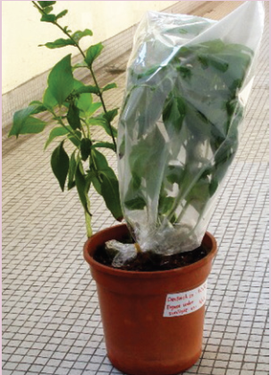
Box item ends
How does the plant get air question mark The leaves have minute pores called stomata through which the exchange of air takes place. These minute pores can be seen through a microscope. Air exchange takes place continuously through the stomata. Plants exchange gases Bracket OPEN C O2 to O2 bracket closed continuously through these stomata. You will study more about these physiological process in your higher classes.
1. Growth movement whose direction is determined by the direction of the stimulus is called Tropism.
2. Non-directional, response of a plant part to stimulus is called nastic movement.
3. The process by which plants prepare their food material is called photosynthesis.
4. The loss of water in the form of water vapour from the aerial parts of the plant body is called transpiration.
5. Stomata are minute opening on the leaves.
Phototropism Unidirectional movement of a plant part to light stimulus.
Geotropism Response of a plant part to gravity stimulus.
Hydrotropism Response of a plant part to water stimulus.
Thigmotropism Response of a plant part to touch stimulus.
Chemotropism Response of a plant part to chemical stimulus.
Thigmonasty Non-directional movement of a plant part in response to touch of an stimulus.
Photonasty Non-directional movement of a plant part in response to light stimulus